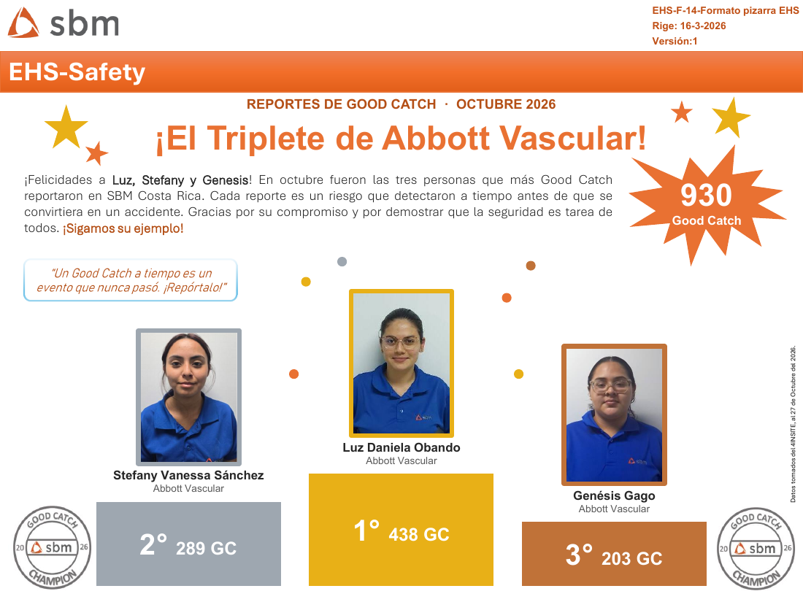
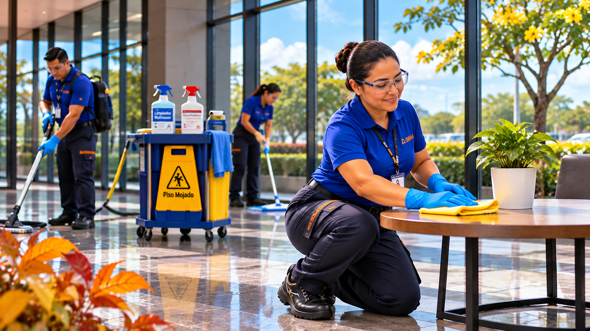
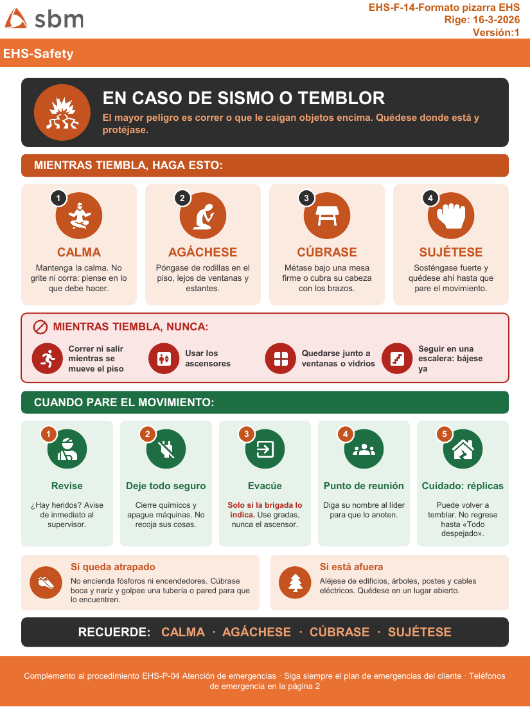
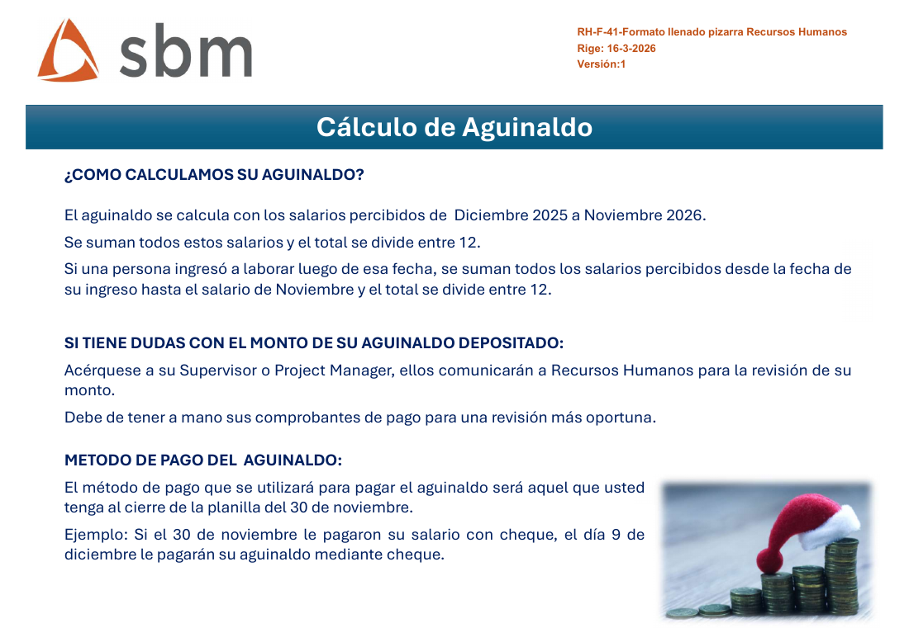
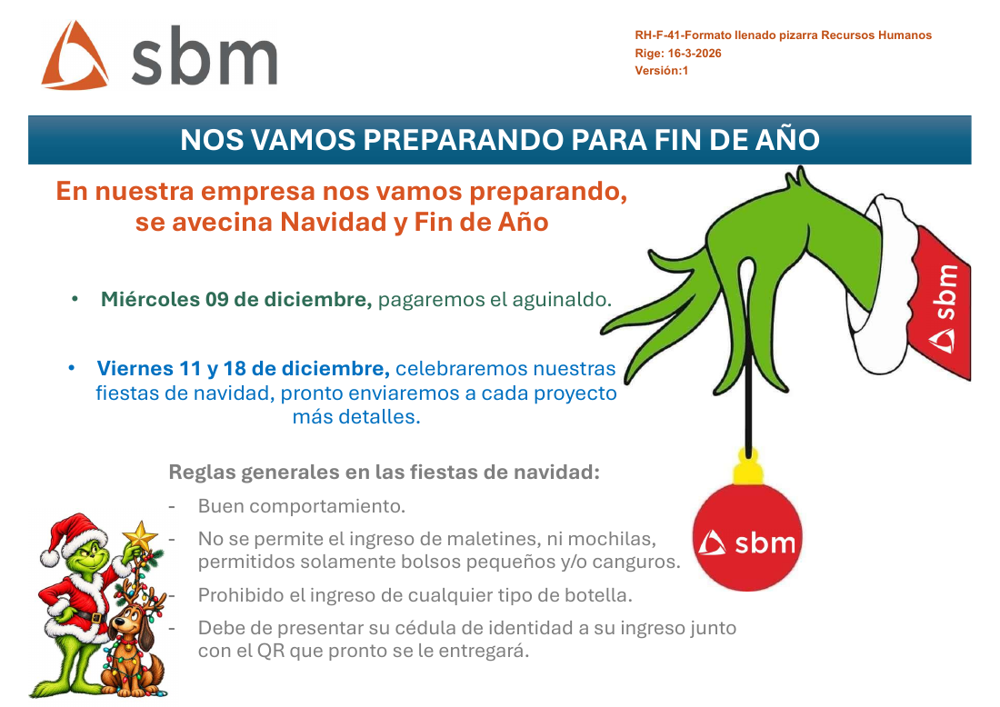
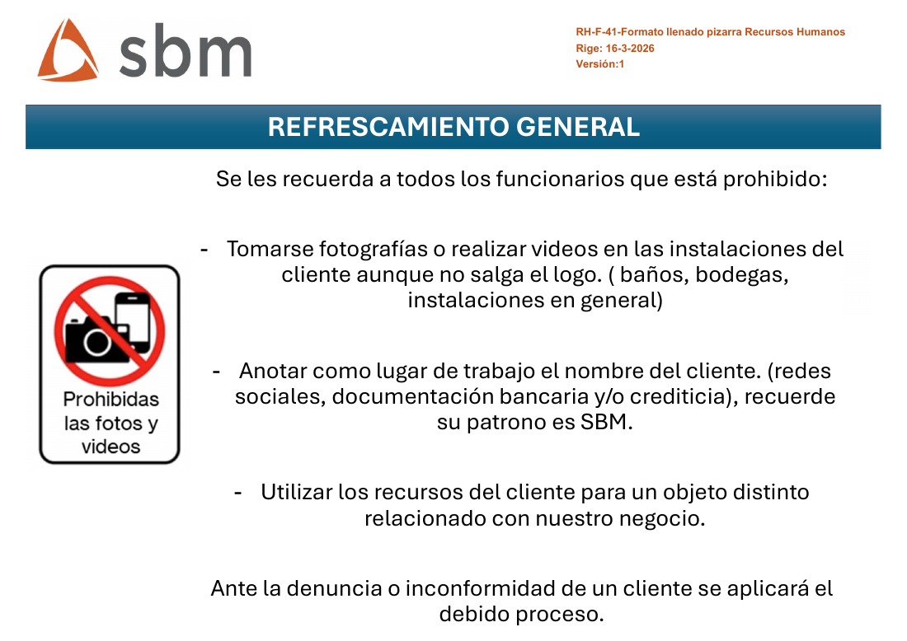
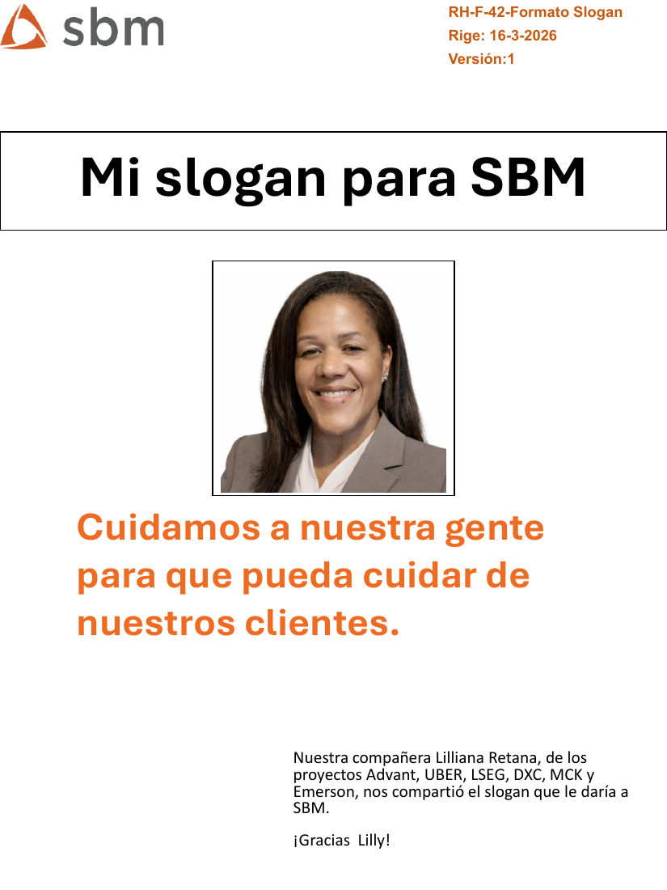
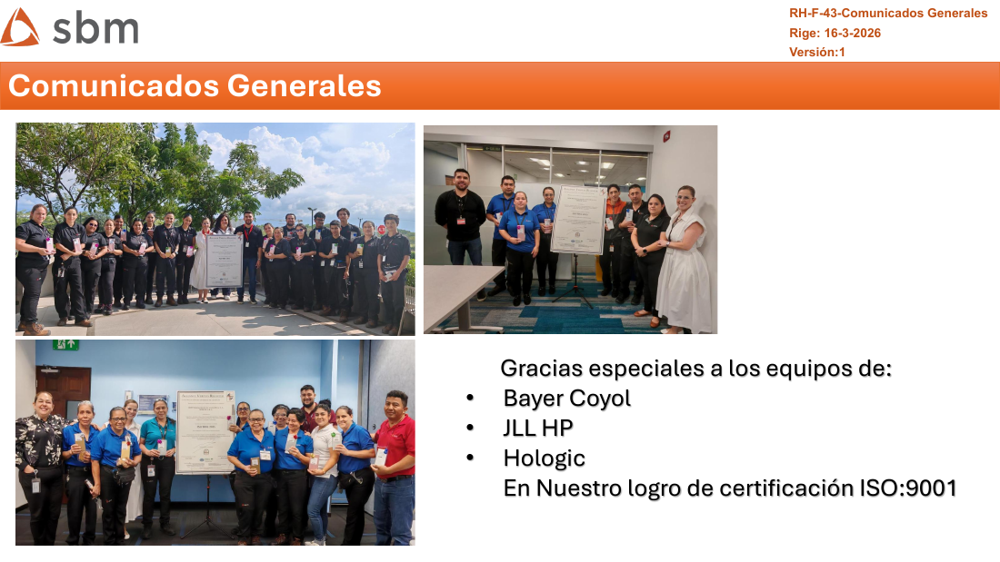

Reconocimiento
¡El triplete de Abbott Vascular!
Luz, Stefany y Génesis: 930 Good Catch reportados en octubre.
Conocer la historia →
Celebramos las buenas ideas, el compromiso con la seguridad y a quienes hacen posible nuestro trabajo.


Calma, agáchese, cúbrase y sujétese.

Fechas, aguinaldo y celebraciones.
Prevención, reconocimiento y preparación para actuar.
15 relacionados con el trabajo; 13 no relacionados. Los golpes con objetos fueron los más frecuentes.
Ver estadísticas →Actuación ante sismos, alarmas y otras emergencias.
Ver guía →Felicitamos a tres colaboradoras de Abbott Vascular por su compromiso.
Ver reconocimiento →Información importante, reconocimientos y las voces de SBM.

Aguinaldo y fiestas de diciembre.

Normas de respeto a las instalaciones del cliente.

Lilliana Retana y Karen Morales comparten sus ideas.

Gracias a Bayer Coyol, JLL HP y Hologic.
¿Tenés un eslogan, una innovación o una historia positiva para compartir? Enviá tu propuesta para revisión y valoración de la oficina.
Comparte tu ideaDos soluciones creadas en Abbott Vascular para hacer más eficiente la operación.
Compartí tu eslogan, innovación o historia. Las propuestas se revisan antes de enviarse a la oficina.
Consulta las publicaciones oficiales que dieron origen a esta edición.